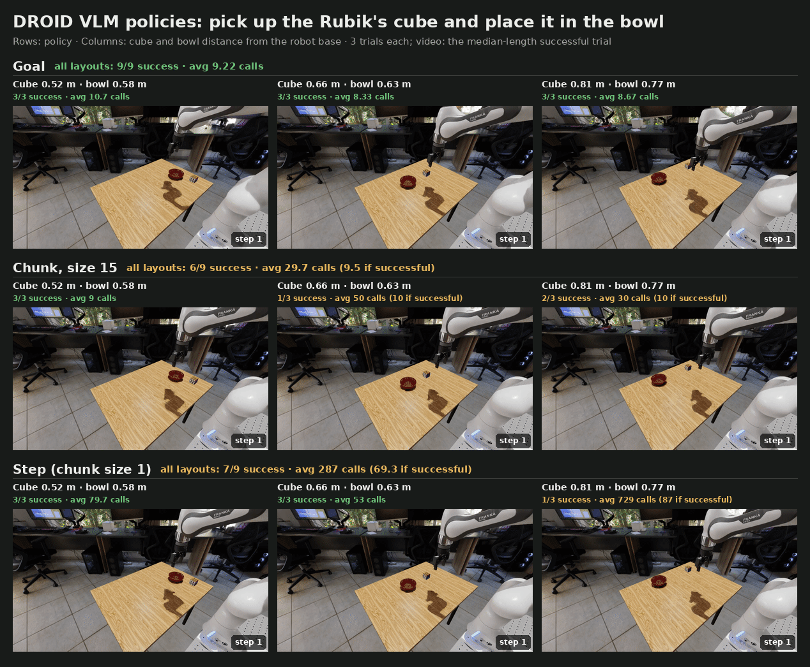

VLM Agent#
A vision-language model (VLM) can act as a policy without any robot training. At each request, Arena sends the model the task, the robot state, and the current camera images. The model returns a JSON command, and Arena checks it and executes it on the robot. The model is called through an OpenAI-compatible inference endpoint, so you do not need to run a model server.
The policies live in the isaaclab_arena_vlm_agent package. This guide runs them on the DROID
pick-and-place task, explains what each request contains, and shows how to connect your own robot
or execution strategy.


Three trials with openai/openai/gpt-6-astra for each execution strategy (rows) and layout
(columns, placement seeds 3, 2, and 19). Each layout is named by the cube and bowl distance from
the robot base. Captions give the successes and the average VLM calls per episode; each video
is one successful trial. The model is sampled, so trials of one layout can differ; see
Goal, chunk, and step policies.#
Prerequisites#
Inference API key setup#
The policy calls a remote VLM endpoint. The setup is the same as for agentic environment generation, so existing keys work for both.
Export one or more API keys
in the host environment before launching a native uv runner or starting the
Docker container. Docker forwards the configured keys when it creates the
container. This step is required only once per host environment.
Generate an NGC API key at build.nvidia.com API keys, then export it for the publicly reachable endpoint:
export NVIDIA_API_KEY="YOUR_NGC_API_KEY"
From the NVIDIA network, generate an internal API key at inference.nvidia.com key management, then export it:
export NV_API_KEY="YOUR_INTERNAL_API_KEY"
Note
This endpoint is accessible by NVIDIA employees only and counts into your Inference Hub token usage.
Create an OpenAI account, generate a secret at OpenAI API keys, and configure payment or prepaid credits under OpenAI billing. OpenAI charges the account associated with the key according to its current API pricing and usage. Store the key securely and do not commit it to the repository.
export OPENAI_API_KEY="YOUR_OPENAI_API_KEY"
Note
The openai endpoint connects directly to a third-party service
operated by OpenAI, not NVIDIA. Its availability, regional
restrictions, data handling, pricing, and terms are controlled by
OpenAI. Review those terms before sending prompts or other data.
Set ARENA_INFERENCE_ENDPOINT to choose the default endpoint:
export ARENA_INFERENCE_ENDPOINT=public # internal, public, or openai
Select the endpoint and model#
If a Run sets policy.endpoint, it uses that endpoint instead of ARENA_INFERENCE_ENDPOINT.
The example configurations set policy.endpoint: internal, whose default model is
openai/openai/gpt-6-astra. To use another endpoint, override
the field, or delete it from the YAML so that the Run uses ARENA_INFERENCE_ENDPOINT:
runs.droid_pnp_vlm_goal.policy.endpoint=public # internal, public, or openai
Each endpoint has a default model; see Inference Model and Spec Quality for the list. Two more policy fields override the connection:
policy.model: another model on the same endpoint.policy.base_url: any OpenAI-compatible URL. The API key still comes from the endpoint’s variable.
The model must support strict JSON-schema structured outputs
(response_format={"type": "json_schema", ...}). With image observations, it must also accept
images. All results on this page were run with openai/openai/gpt-6-astra. When the policy
starts, it sends one short ping request, so a wrong key, URL, or model fails before the
simulation runs.
The pick-and-place task#
Both example configurations run one episode of pick_and_place_maple_table, the environment
from First Arena Environment: pick up the Rubik’s cube and place it in the bowl, in the
home_office_robolab scene. Two settings differ from that page:
Embodiment:
droid_abs_ikinstead ofdroid_rel_joint_pos. Each action is an absolute pose for the gripper’sbase_linkin the robot root frame, given as XYZ in meters followed by an XYZW quaternion, then a binary gripper command (0 opens, 1 closes). Differential IK tracks the pose.Task text: the
language_instructiontext is sent to the model as the task.
Run the example#
Prepare the Arena runtime from the repository root, using either a native uv environment or
the base Docker container (see Installation):
uv sync --extra dev
source .venv/bin/activate
export OMNI_KIT_ACCEPT_EULA=YES ACCEPT_EULA=Y
./docker/run_docker.sh
Arena includes one configuration for each policy type:
Goal policy (droid_pnp_vlm_goal_experiment.yaml)
# Copyright (c) 2026, The Isaac Lab Arena Project Developers (https://github.com/isaac-sim/IsaacLab-Arena/blob/main/CONTRIBUTORS.md).
# All rights reserved.
#
# SPDX-License-Identifier: Apache-2.0
# Run inside the Arena runtime with NV_API_KEY set:
# /isaac-sim/python.sh isaaclab_arena/evaluation/experiment_runner.py --viz none \
# --experiment_config isaaclab_arena_environments/experiment_configs/droid_pnp_vlm_goal_experiment.yaml
# Override endpoint/model/base_url as needed. Credentials stay in the environment.
# The droid preset supplies absolute-pose adapters, Robotiq measurements, and strategy-specific prompts.
# Set policy.system_prompt to override its default prompt.
runs:
droid_pnp_vlm_goal:
environment:
type: pick_and_place_maple_table
enable_cameras: true
embodiment: droid_abs_ik
pick_up_object: rubiks_cube_hot3d_robolab
destination_location: bowl_ycb_robolab
hdr: home_office_robolab
environment_builder:
num_envs: 1
language_instruction: >-
Pick up the Rubik's cube and place it in the bowl.
Approach with the gripper open, close around the object, lift it,
move above the destination, and open to release.
policy:
type: isaaclab_arena_vlm_agent.vlm_agent_policy.VLMGoalPolicy
endpoint: internal
vlm_embodiment_adapter: droid
observation_modality: image_state
max_steps_per_goal: 30
rollout_limit:
num_episodes: 1
Chunk policy (droid_pnp_vlm_chunk_experiment.yaml)
# Copyright (c) 2026, The Isaac Lab Arena Project Developers (https://github.com/isaac-sim/IsaacLab-Arena/blob/main/CONTRIBUTORS.md).
# All rights reserved.
#
# SPDX-License-Identifier: Apache-2.0
# Run inside the Arena runtime with NV_API_KEY set:
# /isaac-sim/python.sh isaaclab_arena/evaluation/experiment_runner.py --viz none \
# --experiment_config isaaclab_arena_environments/experiment_configs/droid_pnp_vlm_chunk_experiment.yaml
# Override endpoint/model/base_url as needed. Credentials stay in the environment.
# The droid preset supplies absolute-pose adapters, Robotiq measurements, and strategy-specific prompts.
# Set policy.system_prompt to override its default prompt.
runs:
droid_pnp_vlm_chunk:
environment:
type: pick_and_place_maple_table
enable_cameras: true
embodiment: droid_abs_ik
pick_up_object: rubiks_cube_hot3d_robolab
destination_location: bowl_ycb_robolab
hdr: home_office_robolab
environment_builder:
num_envs: 1
language_instruction: >-
Pick up the Rubik's cube and place it in the bowl.
Approach with the gripper open, close around the object, lift it,
move above the destination, and open to release.
policy:
type: isaaclab_arena_vlm_agent.vlm_agent_policy.VLMChunkPolicy
endpoint: internal
vlm_embodiment_adapter: droid
observation_modality: image_state
chunk_size: 3
rollout_limit:
num_episodes: 1
Run the goal policy:
python isaaclab_arena/evaluation/experiment_runner.py \
--viz kit \
--experiment_config isaaclab_arena_environments/experiment_configs/droid_pnp_vlm_goal_experiment.yaml
The runner prints the endpoint and model it connects to, then steps the episode. Each request
takes several seconds, and the simulation waits while a request is in flight. Run the chunk
policy the same way with droid_pnp_vlm_chunk_experiment.yaml.
Override settings for one Run on the command line. Each line below is one example:
# Step policy: one command per request
runs.droid_pnp_vlm_chunk.policy.chunk_size=1
# Longer chunks: fewer requests per episode
runs.droid_pnp_vlm_chunk.policy.chunk_size=15
# Another cube and bowl layout
runs.droid_pnp_vlm_chunk.environment_builder.placement_seed=2
# Another endpoint and model
runs.droid_pnp_vlm_goal.policy.endpoint=openai
runs.droid_pnp_vlm_goal.policy.model=<model>
For example, to run the step policy:
python isaaclab_arena/evaluation/experiment_runner.py \
--viz kit \
--experiment_config isaaclab_arena_environments/experiment_configs/droid_pnp_vlm_chunk_experiment.yaml \
runs.droid_pnp_vlm_chunk.policy.chunk_size=1
Add --output_base_dir ./output --record_camera_video to save one video per camera, and add
--serve_evaluation_report to browse them, as for the OpenPI policy.
Goal, chunk, and step policies#
The two registered policies differ in what one response controls. The last three columns come from the trials in the figure: three per layout, nine per policy.
Policy |
One response contains |
Executed as |
Successes |
Requests per successful episode |
Tokens per successful episode |
|---|---|---|---|---|---|
|
One goal pose and gripper state |
A motion generator moves the arm toward the goal each step. The policy requests a new
goal when the current one is reached, blocked (the arm and gripper stopped short
of it), or timed out after |
9 of 9 |
8–12 (mean 9) |
19k–30k (mean 23k) |
|
15 commands |
One command per step. The policy requests the next chunk when the current one is used up. |
6 of 9 |
5–14 (mean 9.5) |
17k–47k (mean 32k) |
Step ( |
One command |
One request per simulation step. |
7 of 9 |
44–96 (mean 69) |
108k–227k (mean 167k) |
Every request sends about 2,000–2,200 prompt tokens, including three 384-pixel images. What the model returns differs by policy: about 300 tokens for a goal, 100 for a step command, and 1,400 for a chunk of 15 commands. Most of these are model reasoning. A step episode costs the most because it makes the most requests.
A failed episode costs far more than a successful one, because the policy keeps requesting until the episode ends at 1,050 steps. A failed chunk episode used about 240k tokens, and a failed step episode about 2.4M.
Step mode is also the most sensitive to a single bad response. A command executes on the very next step, so one stray “open” while the robot carries the cube drops it. Goal and long-chunk modes request far less often and give the model time to observe the result of each response.
Next steps#
To see what each request contains, and how to connect another robot or add an execution strategy, see VLM agent policies.